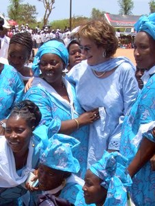

We tend to imagine that lasting social change begins with a new law. A vote. A ruling handed down from somewhere far away.
But this particular movement, one that reshaped how thousands of communities think about health, education, and human dignity, began with something far quieter than any of that.
People sitting together under trees, talking.
An American who chose to listen
The story begins in Senegal in 1991, when American educator Molly Melching founded a small organisation called Tostan.
By then, Melching had already spent almost twenty years living in Senegal, since arriving as a student in 1974. She had watched, again and again, as well-funded organisations arrived in rural villages with the answers already decided. Improve this. Change that. Stop doing this. The intentions were often good. The results, more often than not, were not.
So Melching tried something almost radical in its simplicity. She stopped arriving with solutions.

A different kind of question
Instead, Tostan began by asking communities what they wanted for their own future.
Its classes were taught in Wolof and other local languages, not in French, the language of the colonisers. Villagers, young and old, gathered to learn together, not just literacy and health, but democracy, human rights, and how to solve problems as a community. Nobody stood at the front and lectured. The point was never to tell people what to think. The point was to hand them the tools to decide for themselves.
That emphasis on listening became fundamental to Tostan's approach: valuing what communities already knew, building on local knowledge and strengths, and working with people rather than arriving with answers already decided.
What happened next surprised everyone
The conversations did not remain inside the first villages. People carried the ideas into neighbouring communities, and discussions spread through the social networks that already connected families and villages to one another.
And then, communities began to do something nobody had told them to do. On their own, they started to abandon long-held practices they no longer believed reflected the future they wanted for their daughters and sons.
Crucially, communities did not make those decisions in isolation. Entire networks of villages took part in public declarations together, allowing change to happen across the relationships that connected them rather than leaving a single community to change alone.
Over the decades that followed, the approach spread far beyond those first conversations. Tostan's programmes expanded across West Africa, encompassing health, literacy and governance, while women who had once been excluded from public decision-making increasingly stepped into leadership roles.
THE SCALE OF THE WORK
What grew from those conversations
Source: Tostan International. See sources below.
Among everything that has grown from those circles under the trees, this is the part that stays with me. Community after community chose to let go of practices such as female genital cutting and child marriage. The decisions emerged through discussion within and between communities, as people considered what they wanted for their daughters, sons and those who would come after them.
Why this story matters
What moves me most about this story is not only what changed. It is how.
It reminds us that the deepest change tends to take root when people feel they are the authors of it, not merely the targets of it.
Tostan never asked:
How do we make people change?
It asked:
How do we create the conditions for people to choose change themselves?
That single shift in the question turned an aid project into a movement that has now lasted more than thirty years.
A thought for today
What happened in these villages does not offer a formula for every kind of change. It does, however, leave a useful question behind: what becomes possible when listening comes before the answer?
Sources and further reading
- Tostan International: Maximizing Impact Tostan's explanation of its Community Empowerment Program, organized diffusion, and the programme's direct and indirect reach.
- Tostan International: Inclusive Leadership Current figures on women selected for leadership positions and Community Management Committees.
- Tostan International: Celebrating the Movement to Abandon Female Genital Cutting in Senegal Background on Malicounda Bambara's 1997 public declaration and the community-led movement that followed.
- Tostan International: About Us Background on Molly Melching, Tostan's origins, and the listening-based approach that shaped its work.